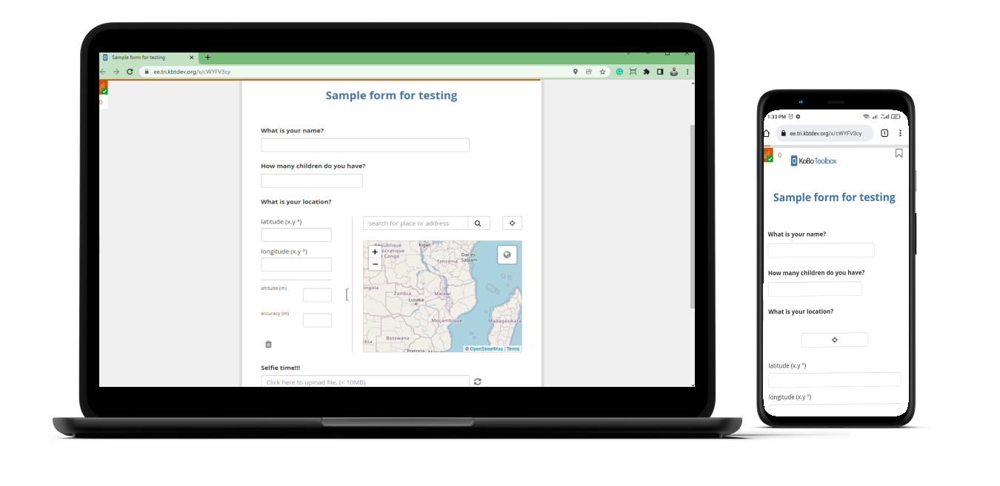

| Pros | Cons |
|---|---|
| 1. Data collection can commence very rapidly and with the need of very few necessary resources (pen and paper) or skills. | 1. Data has to be manually computerized before it can be used (processed and generate insights for reporting), necessitating the need for more “man-hours”. |
| 2. Questionnaires cannot be quickly or easily modified and deployed to data collectors. This is especially challenging when there are multiple data collectors positioned in distant locations or regions with limited access to the data collection headquarters. | |
| 3. The type of data collected is limited to very few possibilities (i.e. text and numbers). |
01: A comparison of paper-based and electronic field data collection systems
1 What is data collection?
This is the systematic process of gathering information, such as observations or measurements. This information can be gathered through digital or manual methods.
When we talk about the origins of our data we refer to our data sources, of which there are two types. We usually mean Primary Data Collection when we speak of collecting the information directly or first-hand, straight from the source or in the field. This data is “raw” and never-before collected by anyone.
Examples of primary data:
- Measuring the length and weight of a fish which was just caught.
- Interviewing someone during a household survey.
- Filling in a questionnaire about your airport experience while awaiting your flight.
Secondary Data involves the collation and use of data which was already collected from primary means and perhaps even processed.
Examples of secondary data:
- Scientific journals, or other publications
- Databases
- Websites
1.1 Why collect data?
We usually have a need to collect data so we can gather information about something or someone so as to better understand it. In practice this can mean several things based on the sector within which the activity is done.
In the case of fisheries, we primarily collect data to better manage our scarce marine resources. So we need to have an idea of how many fish are in our waters, what type, what other fish are eating them, how many fishing boats are targeting them and how much of that fish is landed. These bits of data are sometimes called indicators.
In fisheries management we manage our natural resources not by directly managing the living creatures (i.e. fish), but by managing the people who utilize those natural resources. The knowledge needed is derived almost exclusively from fishers or fisheries scientists on or underneath the waves.
[ add pic of fisher with fish on his boat ]
However, one can ask “why do we need to better manage those scarce marine resources”, and continue asking follow-up questions all the way up to the higher level of societal needs and ideals.
Generally data collection is a key step in evidence-based decision-making. I’m sure we all can agree that it is better to be informed when deciding on matters than not informed. The better informed we are when deciding, the better the available decision options. This can lead to less wastage of organisational and societal resources (work force, finances, and material or supplies) as the decisions will better fit the specific scenario when sufficient information is on hand to support that decision-making process.
2 Paper-based data collection
2.1 What is “paper-based” data collection?
Essentially, this is any data collection method which involves the capture of data on to paper medium using a writing implement. In other words, and very, very simply: writing observations on paper.
2.2 How do “Paper-based” data collection systems typically work?
2.2.1 Preporatory phase (pre-data collection)
- You or your department have some data to collect, for some reason.
- A questionnaire is developed by a researcher, survey team, or similar.
- The questionnaire is then printed on to paper. Sometimes this is called a form.
Note
The survey development process will be discussed a bit later.
2.2.2 The data collection phase
- The forms are distributed to enumerators (data collectors) or respondents. This is how the questionnaire is administered and observations are recorded, documenting interactions or activity.
- The completed forms are then collected from the enumerators and compiled at data collection headquarters (HQ) or sub-regional offices before sent on to the HQ.
And voila! You have collected data! Now what? Recall we discussed decision-making earlier. How do we take those individual records and make that into palatable information for use in decision-making?
2.2.3 Digitization and beyond (post-data collection)
- Data entry or digitization commences, translating analogue (“paper”) data into digital data. The observations on the paper forms are manually typed into a computer, usually on to a spreadsheet (perhaps Microsoft Excel) or into a database.
- Data preparation. This can involve cleaning, edits or corrections, followed by any preliminary analyses which can lead to insights derived from the data.
- Lastly, those insights are summarized and converted into text or visualized, either as tables or plots (graphs and maps of several kinds), which feed into a report which can be useful for decision-making.
Important
Applications such as Microsoft Word are not suitable replacements for spreadsheets or databases! Yes, your information is digitized, but it is not readily useful for much else in that format. And yes, I do know MS Word has some rudimentary features built in which handles calculation and such.
Data can be stored as text files, though. Comma-Separated Value (CSV) files commonly used in the data world to store data in plain text, without the bells and whistles which applications such as MS Excel adds to the data contained within its files.
2.3 Pros and cons of “paper-basesd” data collection
We will need to know the pros and cons of this approach to data collection.
3 Electronic data collection
3.1 What is “electronic” data collection?
The advancement and ubiquity of technology in our daily lives has allowed previously unthinkable means of data collection to be a reality and become ever more feasible. Smart devices (eg. phones, tablets) are everywhere, making our lives better with their capabilities. The near seamless connectivity of smart devices encourages greater mobility and allows even more utility within our modern world.
Smart mobile devices are pretty common, aren’t they? We use them for making calls, playing music, catching up on the news or social media, or playing our favorite game while on the go. Why not also use them for data collection? Why not collect our data with the use of electronic devices?

Electronic data collection is the use of electronic devices for data collection. This is sometimes termed mobile data collection.
3.2 How do “electronic” data collection systems typically work?
3.2.1 Preporatory phase (pre-data collection)
- You or your department have some data to collect, for some reason.
- A questionnaire is developed by a researcher, survey team, or similar.
- The questionnaire is then digitized, converted into an electronic form or e-form.
3.2.2 The data collection phase
- The e-forms are deployed to enumerators (data collectors) or respondents by electronic means, usually via the internet or other network connection. This is how the questionnaire is administered and observations are recorded, documenting interactions or activity.
- The completed forms are then electronically submitted by the enumerator or respondent back to data collection headquarters. In the case where the form is not connected to any network, a physical connection may be required to download the data from the device. In any case the data is already in an electronic state and easily transferable to HQ for collation and processing.
3.2.3 Digitization and beyond (post-data collection)
- Electronic data is digitized at the time of collection! So no further digitizing is necessary. In most cases the data is automatically collated after submission or transferred directly into a database. This is usually done in near real-time.
- Data preparation. This can involve cleaning, edits or corrections, followed by any preliminary analyses which can lead to insights derived from the data.
- Lastly, those insights are summarized and converted into text or visualized, either as tables or plots (graphs and maps of several kinds), which feed into a report which can be useful for decision-making.
Note
Perhaps in a future course I can teach you how to automate steps 2 and 3 above. :)
3.3 Pros and cons of “electronic” data collection
We will need to know the pros and cons of this approach to data collection.
| Pros | Cons |
|---|---|
| 1. Increases the speed and accuracy of collecting quality data while reducing the overall cost. | 1. Commencing data collection requires the availability of more resources and the allotment of more time (for device preparation and eform development and deployment) |
| 2. Data is made readily available for processing and reporting more rapidly (sometimes in near real-time). | 2. Using mobile devices requires some technical knowledge and skill. Some training is necessary to enable users to operate comfortably with mobile devices. |
| 3. More environmentally friendly. | 3. Electronic device use is limited by battery, connectivity, and vulnerability to wet or dusty conditions. |
| 4. Field work is more flexible. Issues in the design of questionnaires can be addressed quickly via editing and redeployment. Similarly, new questions can be added or unnecessary questions removed. A well-designed e-form can be very user-friendly and allow for more “rich” data collection possibilities (eg. audio, video, geospatial). | 4. Electronic devices, though ubiquitous, are still fairly costly to procure and maintain. They can, however, be used for numerous surveys. |
| 5. Field work is more extensible. Any revisions to the questionnaire can be deployed to the data collectors remotely, via the internet and therefore immediately when needed. This enables data collection to be more efficient at scale and over more distant locations. |
3.4 Tools for “electronic” data collection
Several options exist for electronic data collection. A non-exhaustive list includes:
- Microsoft Office
- Google Forms and Sheets
- MySQL or PostgreSQL
- Survey Monkey
- Open Data Kit (ODK)
- SurveyCTO
- KoboToolbox